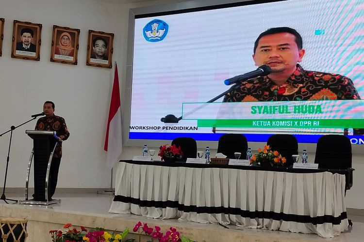

Kurikulum Prototipe Mendapat Dukungan Komisi X DPR, Ini 5 Alasannya
Kompas.com - 30/12/2021, 09:11 WIB
KOMPAS.com - Komisi X Dewan Perwakilan Rakyat Republik Indonesia (DPR RI) mendukung opsi penerapan kurikulum prototipe yang digagas Kemendikbud Ristek. Kurikulum prototipe ditawarkan Kemendikbud Ristek sebagai pilihan bagi sekolah dalam mengatasi kehilangan pembelajaran atau learning loss dan mengakselerasi transformasi pendidikan nasional. Ketua Komisi X DPR RI, Syaiful Huda dalam kesempatan "Lokakarya Sosialisasi Buku dan Kurikulum dalam Rangka Pemulihan Pembelajaran", di Lembaga Penjaminan Mutu Pendidikan (LPMP) Provinsi Jawa Barat, Kota Bandung, Senin (27/12/2021) menyatakan dukungannya atas kurikulum prototipe ini. Berikut beberapa pertimbangan mengapa Komisi X memberikan dukungannya terhadap penerapan kurikulum prototipe atau kurikulum 2022 ini:
1. Bentuk adaptasi dan inovasi
Syaiful Huda menilai, kurikulum 2022 atau kurikulum prototipe merupakan adaptasi dan inovasi yang diperlukan agar dapat bertahan di tengah perkembangan zaman, di mana salah satunya menyangkut opsi model kurikulum yang berlaku di Indonesia. “Sikap terbaik kita adalah beradaptasi dan melakukan terobosan inovasi di dunia pendidikan kita karena disrupsi di bidang pendidikan akan berdampak langsung kepada peserta didik kita di semua jenjang. Salah satu opsi dari adaptasi adalah melakukan pembaruan kurikulum kita,” ujar Ketua Komisi X DPR.
2. Langkah pembaharuan
Syaiful Huda melanjutkan, ada beberapa pertimbangan mengapa kurikulum perlu disempurnakan. Beberapa kali ia berdiskusi dengan pakar penyusun kurikulum dan akhirnya berkesimpulan paradigma konservatif dalam kurikulum jika disandingkan perkembangan dunia maka tak lagi relevan. “Semangatnya, kita mencari terobosan dan kita beradaptasi. Kami dengan Kemendikbudristek mengambil pemberlakukan kurikulum ini adalah opsional," ungkapnya. "Kita tidak bisa memegang paradigma konservatisme di dunia pendidikan kita karena dinamika di internal dan eksternal di dunia pendidikan kita melampaui apa yang kita prediksi termasuk yang dipikirkan oleh pakar perumus kurikulum 2013,” tegas Syaiful Huda. “Sehingga mau tidak mau kita harus gunakan pembaruan-pembaruan. Ini adalah bagian dari risiko langkah terobosan yang harus cepat-cepat kita ambil jika tidak, kita akan tertinggal,” lanjut Syaiful Huda memberi penekanan.
3. Kurikulum 2013 padat dan banyak
Kurikulum 2013 menurutnya adalah kurikulum yang padat konten dan bermuatan sangat banyak. “Dalam dunia disrupsi, jika kurikulum banyak konten dan muatannya, kita tidak bisa memberikan kesempatan kepada peserta didik untuk mendalami sesuatu dari kecenderungan bakat mereka. Padahal kita sedang menciptakan generasi yang kompeten,” tegasnya.
4. Melahirkan lulusan berkompetensi
Ia mengingatkan bahwa saat ini yang dibutuhkan adalah masing-masing peserta didik memiliki kompetensi yang mumpuni. Individu terbaik, menurutnya, adalah mereka yang menguasai sesuatu secara mendetil hingga ke ‘akarnya’. Dengan kurikulum prototipe, dimungkinkan ruang improvisasi guru diperlebar sehingga guru dapat mengakselerasi dan mencari model terbaik dalam pembelajaran. “Kurilulum Prototipe ingin mengurangi konten. Hal ini supaya anak-anak lebih memahami tentang suatu hal lebih detil,” jelasnya.
5. Bersifat optional atau tidak wajib
Lalu yang paling penting adalah kurikulum ini bersifat opsional atau tidak wajib. Kalau ada sekolah yang memilih opsi kurikulum prototipe ini, Syaiful Huda meminta ada skema intervensi yang disiapkan untuk mengimplementasikannya. Tentu berbagai keputusan yang diambil sekolah atau pemda, akan berdampak pada anggaran dan sarpras. “Nanti akan kami pertimbangkan untuk afirmasi alokasi anggaran dari APBN, untuk dicari skemanya,” imbuhnya optimistis sambil mengingatkan agar berbagai pihak yang tertarik untuk beralih ke kurikulum ini untuk melakukan berbagai penyesuaian dan simulasi. Ia menambahkan, sebagai mitra strategis Komisi X DPR RI mendukung terobosan-terobosan yang dilakukan Kemendikbudristek, khususnya dalam penanganan dampak pandemi. “Semoga dengan opsi kurikulum prototipe, saya yakin akan ada transformasi pendidikan yang lebih cepat terlebih di masa pascapandemi ini,” pungkas Syaiful Huda.